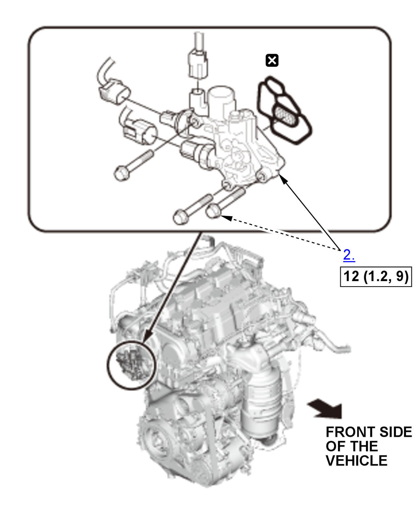
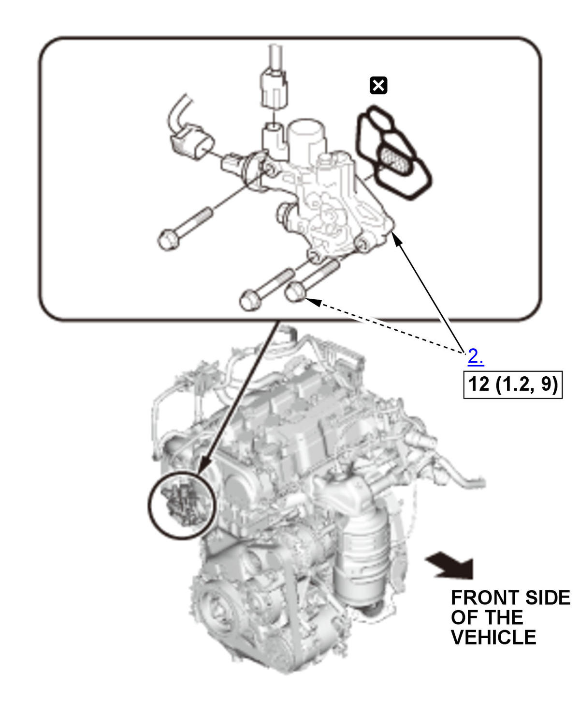

Removal and Installation: Procedure
NOTE:
Numbered call-outs in figure pertain to list numbers in following procedure.
Fig 1: Rocker Arm Oil Control Valve Components With Torque Specifications (K20C2 - With Rocker Arm Oil Pressure Switch)


 Courtesy of HONDA, U.S.A., INC.
Courtesy of HONDA, U.S.A., INC. |
Torque: N.m (kgf.m, lbf.ft) |
|
Replace |
NOTE:
Numbered call-outs in figure pertain to list numbers in following procedure.
Fig 2: Rocker Arm Oil Control Valve Components With Torque Specifications (K20C2 - Without Rocker Arm Oil Pressure Switch)

Courtesy of HONDA, U.S.A., INC. |
Torque: N.m (kgf.m, lbf.ft) |
|
Replace |
- Expansion Tank - Move
NOTE:
- Do not disconnect the water bypass hoses.
- Do not bend the water bypass hoses excessively.
- Rocker Arm Oil Control Valve Assembly - Remove
- Engine Oil Pressure Switch - Remove (if necessary)
- Rocker Arm Oil Pressure Switch - Remove (if necessary)
- All Removed Parts - Install
1. Install the parts in the reverse order of removal.